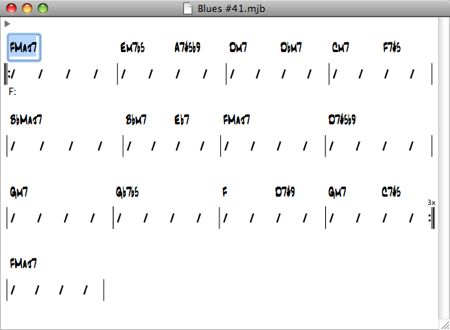
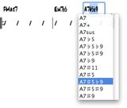
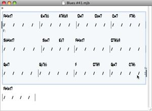
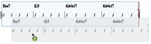
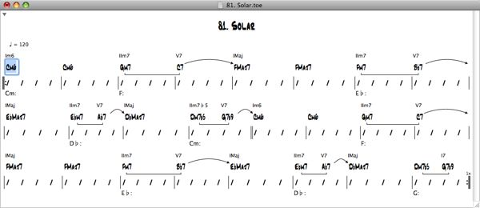
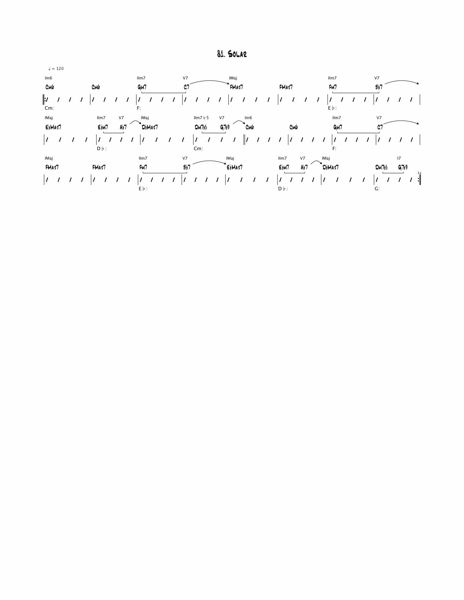
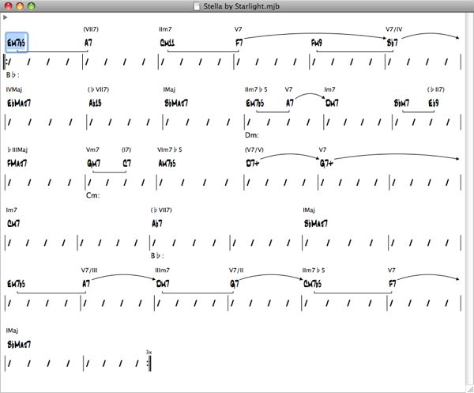
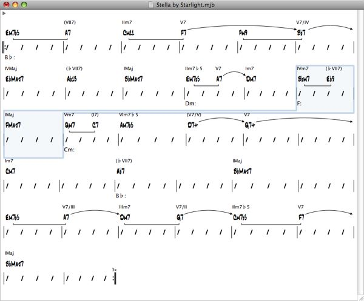

A brief overview of how to use T2G.
T2G integrates and provides a GUI for two programs I wrote: T2, a jazz harmonic analysis program, and MyJazzBand 2 Lite, a jazz accompaniment generation program. I’m releasing T2G for free research, educational, and non-commercial use, but disallowed any redistribution. It can be downloaded from its main page: T2G — Jazz Harmonic Analysis and Accompaniment Generation Software.
Refer to the following articles for more information on T2.
Refer to the following articles for more information on MyJazzBand 2 Lite.
T2G can import and export chord charts from files in Band-in-a-Box (BiaB) format. To import a BiaB file, simply open it with T2G. BiaB files should have filename extensions “.sg?” and “.mg?” where ‘?’ is a letter or a digit. To export a chord chart as a BiaB file, choose File > Export as BiaB...
T2G of course also opens and saves files in its own native XML format. These contain chord chart information as well as edited analysis information (more on this below).
T2G’s chord chart editor has text completion and input validation features that allow chords to be entered quickly and correctly. Suppose you want to enter the following chord chart.
Choose File > New in T2G to create a new chord chart document (if necessary). The text box above the first beat of the first bar should be selected (if not, click to select it). Type into that text box the chord “fmaj7”. T2G automatically capitalizes chords for you. Hit Right Arrow four times or Command-Right Arrow once to get to the first beat of the second bar. Notice that a new bar is automatically appended when you move beyond the last bar.
Type “em7b5”. T2G automatically turns the characters ‘#’ (hash mark/pound sign) and ‘b’ (lower-case letter b) into ♯ and ♭ (sharp and flat), respectively. Now hit Right Arrow twice or Option-Right Arrow once to get to the third beat. Type “a7”, then F5 (function key 5) to invoke text completion. Select A7♯5♭9 from the drop down menu. Text completion always shows all valid chords that start with the text already entered into the text box. In fact typing a root (say ‘C’) and hitting F5 will display all chord types recognized by T2G.
Continue typing in all the chords. Notice that after entering the last chord, the chorus now ends at bar 13. To change the chorus to end at bar 12, select bars 1 to 12 by clicking on the first half of bar 1 near the slash notation and dragging to the second half of bar 12. Then choose Edit > Set Chorus.
Now you can select Chart > Analyze to perform an analysis on the chord chart. Select Chart > Generate MIDI File... to generate an accompaniment and save that to a MIDI file, or select Chart > Generate and Open to generate an accompaniment and open that in the default application that Mac OS X uses to handle files with the “.mid” extensions. By default this is QuickTime, but can be set to any other application that can read MIDI files (such as a MIDI sequencer program).
The chords in the examples shown here are displayed in the JazzText font (size 16). JazzText came with the purchase of MakeMusic’s Finale software. But I believe it’s also part of their other software products, including their free Finale Notepad. Fonts in T2G can be changed by selecting T2G > Preferences... The spacing used by T2G to display chord charts has been optimized for JazzText 16. Adjustments may be made by editing the file MyParameters.plist in the Resources folder within the T2G application bundle.
The cut, copy, and paste commands in T2G’s chord chart editor behave much like those in any other applications. They are invoked by Edit > Cut, Edit > Copy, and Edit > Paste, respectively. The cut, copy, and paste commands will only work on bars when one or more bars have been selected, or, for the paste command, also when an “insertion point” has been placed between two bars. It may be helpful to think of bars in T2G in the same way we treat characters in a word processor. Like the latter, bars flow automatically to the next line when the current line runs out of room. Also like characters, one or more bars may be selected, or an insertion point can be placed between any two of them (or before the first or after the last one). An insertion point is placed by clicking the mouse near the bar line.
T2G also supports drag-and-drop. To initiate a drag, first select one or more bars which you want to drag. Then click anywhere within the selection (but away from chord text boxes) and hold down the mouse button. When the selection darkens, you’re ready to drag. Move the mouse (with the mouse button still down) to choose the new location for your selection, which will be indicated by a red vertical line. Release the mouse button to perform the drop. Any time during the drag, pressing the Option key will cause the selection to be copied instead of moved. Drag-and-drop works either within a chord chart or between two chord charts. Using it is really much simpler than this description. If you’ve dragged-and-dropped text, then you’ll know how it works. Practice makes perfect.
A triangular “disclosure button” at the upper-left corner of a chord chart can be clicked to show or hide the song title and tempo. Edit these in the same way you’d edit any text box.
A lead sheet or analysis can be printed by choosing File > Print. The layout of bars in the output is determined by that currently displayed in the chord chart window. Therefore, to put more bars on each line of the output, widen the chord chart window to get the desired layout before choosing File > Print. For example, to print the analysis of Solar with eight bars per row, first resize its chord chart window to display eight bars per row, as shown.
Then choose File > Print. Here’s the output.
Please read my article T2 - A Jazz Harmonic Analysis Program and references listed there for information on jazz harmonic analysis and the T2 Getting Started Guide to understand the limitations of the T2 analysis algorithm. T2G is just a computer program and it won’t analyze all tunes “correctly”. One can consider it to have failed when its partitioning of chord changes into different key centers disagrees with how jazz musicians will generally perform an analysis on those same changes. If you find such chord changes please send them to me with what you believe to be the correct analyses and an explanation (preferably with reference). This will help me improve the T2 algorithm in the future.
When T2G produces a segmentation with which you disagree, you can correct that using its chord chart editor. Here’s an example. Consider the chord changes for the tune Stella by Starlight, with the analysis generated by T2G.
Some people would hear bars 12 and 13 in F major (despite the deceptive resolution). To make this correction, select bars 12 and 13; then right click on the selection (away from the text boxes) and choose Set Major Key Center > F in the popup contextual menu. Then select Chart > Show Analysis. Here’s what the resulting chord chart will look like.
Note that the roman numeral chords in bars 12 and 13 now have new values that correspond to the new key center F major. Some people may prefer bars 10 through 13 to be all in F major. If so, in the above steps, select bars 10 through 13 instead of bars 12 and 13.
When you save this chord chart, the segmentation information you enter is also saved. When you open the chord chart again, select Chart > Show Analysis to display the analysis according to the segmentation you entered. Selecting Chart > Analyze, on the other hand, invokes the T2 algorithm to generate a segmentation again and overwrites any segmentation information stored with the chord chart. But since Chart > Analyze is undoable, you can choose Edit > Undo Change Key Centers to recover the stored segmentation information.
Because of how the Chart > Show Analysis command works, you can in fact always enter your own segmentation and use T2G purely as a “analysis editor”.
Please send questions to my Email address. If you must send comments, opinions, and suggestions, it’s better to quote from a reference to support your point rather than to say “this is how I think such and such”. Doing the former will save us both a lot of time.
Category: Jazz, Programming, T2